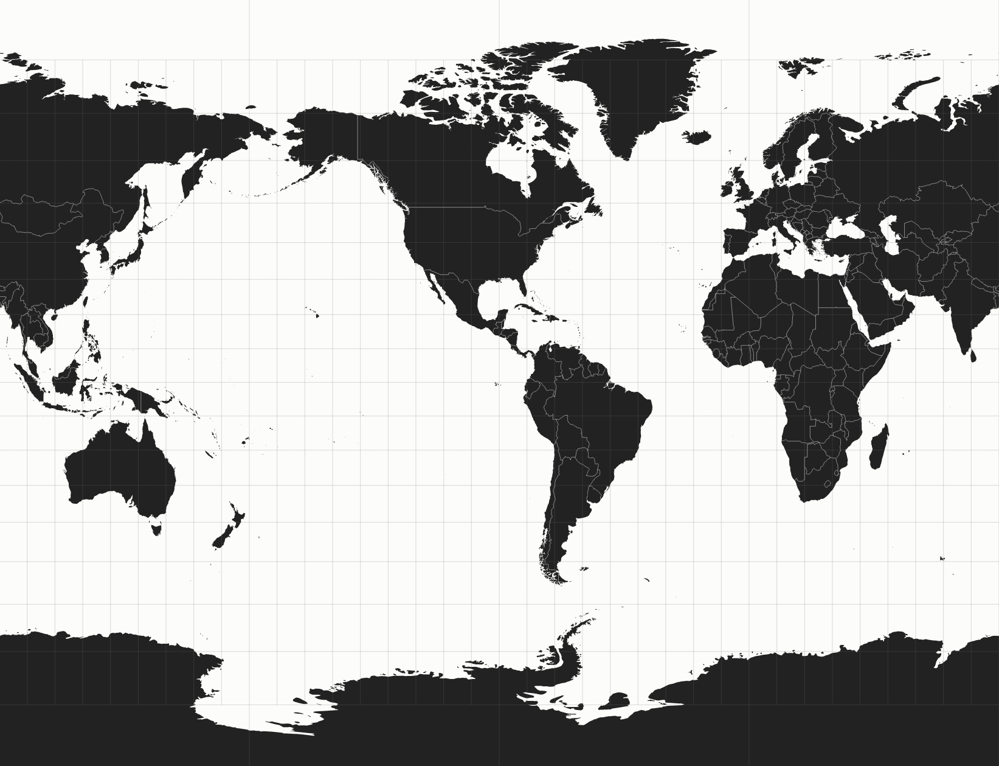
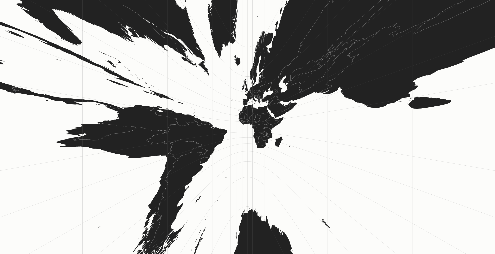
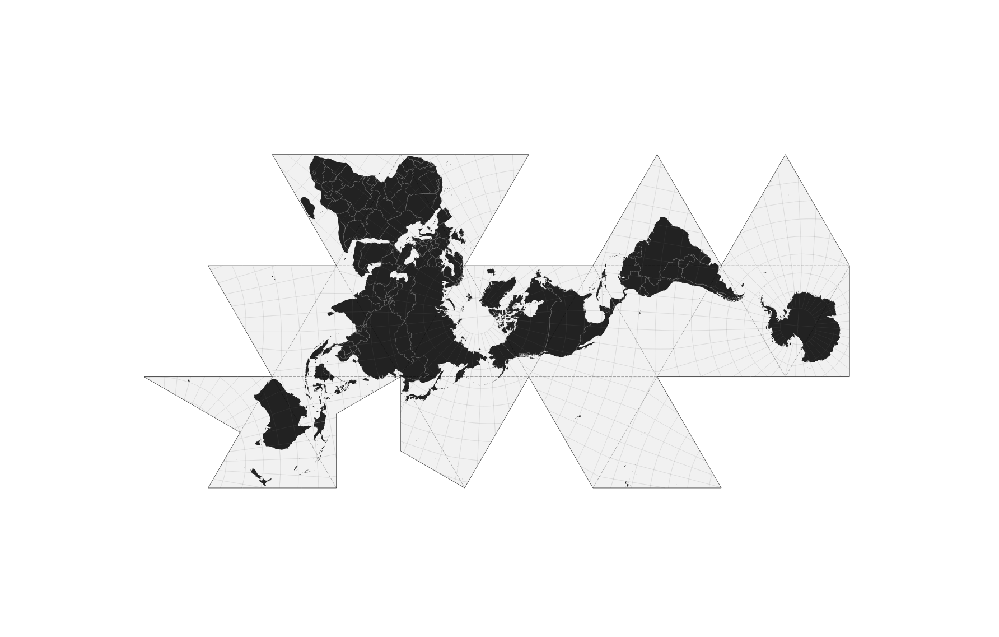

Twitter : @patrickarlt / Slides : http://bit.ly/1rVy6n3
The biggest company you never heard of...
- Amber Case
How do you flatten the Earth to show in 2D?
Flatten map on a plane, distoration happens at the edges
Flatten map on a cylinder, distortion happens at the top/bottom
Flatten map on a cone, distortion happens away from the center
Shapes are always presented with areas proporational to each other.
Distances along meridians are preserved.
The shortest distance between 2 points is always a straight line
Ignore trying to preserve a metric and make the end result "feel" right
Combat map distoration and figure out which countries go where!
Geographic Coordinate System/Projected Coordinate System
[45.5217, -122.6774]You can't tell me because you dont have a reference
[45.5217, -122.6774]GEOGCS["WGS 84",
DATUM["WGS_1984",
SPHEROID["WGS 84",6378137,298.257223563,
AUTHORITY["EPSG","7030"]],
AUTHORITY["EPSG","6326"]],
PRIMEM["Greenwich",0,
AUTHORITY["EPSG","8901"]],
UNIT["degree",0.01745329251994328,
AUTHORITY["EPSG","9122"]],
AUTHORITY["EPSG","4326"]]GEOGCS["WGS 84",
DATUM["WGS_1984",
SPHEROID["WGS 84",6378137,298.257223563,
AUTHORITY["EPSG","7030"]],
AUTHORITY["EPSG","6326"]],
PRIMEM["Greenwich",0,
AUTHORITY["EPSG","8901"]],
UNIT["degree",0.01745329251994328,
AUTHORITY["EPSG","9122"]],
AUTHORITY["EPSG","4326"]]This is what GPS satellites use.
Plot data in Latitude/Longitude onto a spherical model of the Earth
Plot data in X/Y pairs onto a flat surface.
X=Longitude, Y=Latitude
PROJCS["WGS 84 / Pseudo-Mercator",
GEOGCS["WGS 84",
DATUM["WGS_1984",
SPHEROID["WGS 84",6378137,298.257223563,
AUTHORITY["EPSG","7030"]],
AUTHORITY["EPSG","6326"]],
PRIMEM["Greenwich",0,
AUTHORITY["EPSG","8901"]],
UNIT["degree",0.0174532925199433,
AUTHORITY["EPSG","9122"]],
AUTHORITY["EPSG","4326"]],
PROJECTION["Mercator_1SP"],
PARAMETER["central_meridian",0],
PARAMETER["scale_factor",1],
PARAMETER["false_easting",0],
PARAMETER["false_northing",0],
UNIT["metre",1,
AUTHORITY["EPSG","9001"]],
AXIS["X",EAST],
AXIS["Y",NORTH],
EXTENSION["PROJ4","+proj=merc +a=6378137 +b=6378137 +lat_ts=0.0 +lon_0=0.0 +x_0=0.0 +y_0=0 +k=1.0 +units=m +nadgrids=@null +wktext +no_defs"],
AUTHORITY["EPSG","3857"]]Web Mercator. Default in Google Maps, Leaflet and Esri.
L.marker([45.5217, -122.6774]).addTo(map)L.CRS.EPSG3857 to get the X/Y coordinates of the Lat/Lng (projection)Shapefiles package useful for distributing spatial data.
ogr2ogr parks.geojson PortlandParksTrails -F GeoJSON -t_srs EPSG:4326 -lco COORDINATE_PRECISION=6Transform point data in a CSV file to GeoJSON.
ogr2ogr graffiti.geojson graffiti.vrt -f GeoJSON -t_srs EPSG:4326 -lco COORDINATE_PRECISION=-4Use proj4js and Node to convert the same CSV
Vector maps powered by WebGL
Mix and match map projections on the fly
Wait a sec, why dont we look at the Earth in 3D!
Twitter : @patrickarlt / Slides : http://bit.ly/1rVy6n3